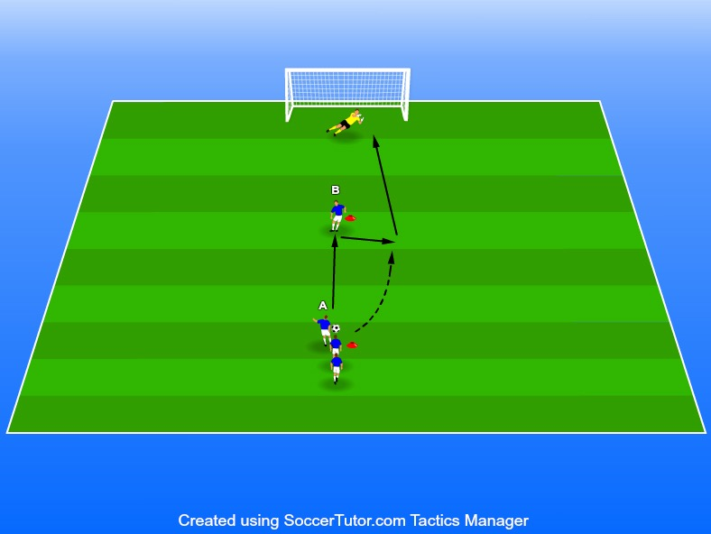

Avslut, väggspel, medtag & målvaktsträning
Ålder 7–9 år
1 boll/spelare
3 konor
5-7 spelare 1. Spelare A driver fram till konen och passar därefter spelare B.
Spelare B passar tillbaka på ett tillslag till spelare A som avslutar på mål.
Därefter går spelare B och hämtar bollen medans spelare A agerar väggspelare.
Ett väggspel sker alltid på ett tillslag så fokus här är timing i både löpning och passning. Spelarna ska kunna avsluta med bollen naturligt i löpsteget.
Viktigt att få till skott med båda fötterna.
Vi vill hålla högt tempo i övningen därför är det viktigt att fördela på flera mål om spelar antalet är högt.